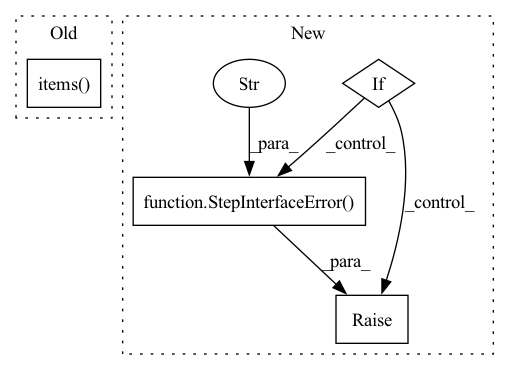

Pattern ID :40789
Before Change
if isinstance(return_spec, Output):
// If its a named, potentially multi, outputs we go through
// each and create a spec.
for return_tuple in return_spec.items() :
cls.OUTPUT_SIGNATURE.update(
{return_tuple[0]: return_tuple[1]}
)After Change
shared_input_output_keys = set(cls.INPUT_SIGNATURE).intersection(
set(cls.OUTPUT_SIGNATURE)
)
if shared_input_output_keys:
raise StepInterfaceError(
f"There is an overlap in the input and output names of "
f"step "{name}": {shared_input_output_keys}. Please make "
f"sure that your input and output names are distinct."
)
return cls
In pattern: SUPERPATTERN
Frequency: 3
Non-data size: 4
Instances Fragment ID: 115181150
Project Name: maiot-io/zenml
Commit Name: 8ad287d81d8ca453fd79c996b7f2afbf977cce59
Time: 2021-11-17
Author: michael.schuster.ffb@googlemail.com
File Name: src/zenml/steps/base_step.py
M Class Name: BaseStepMeta
N Class Name: BaseStepMeta
M Method Name: __new__(4)
N Method Name: __new__(4)
M Parent Class: type
N Parent Class: type
M File Name: src/zenml/steps/base_step.py
N File Name: src/zenml/steps/base_step.py
M Start Line: 85
M End Line: 141
N Start Line: 72
N End Line: 158
Before Change
"that you provide to your steps, please refrain from using "
"a non-descriptive parameter definition such as "**kwargs".")
for arg, arg_type in process_spec.annotations.items() :
if isinstance(arg_type, Input):
self.__input_spec.update({arg: arg_type.type})
elif isinstance(arg_type, Output):After Change
instance_args.pop(0) // Remove the self
for param in instance_args:
param_type = instance_spec.annotations.get(param, None)
if param_type in [int, float, str, bytes, bool]:
self.__param_spec.update({param: param_type})
else:
raise StepInterfaceError(
"While designing the "__init__" function of your steps, "
"please annotate the input parameters that you want to "
"use. The supported parameters include, int, float, str" )
def __call__(self, **artifacts):
params = {p: self.__getattribute__(p) for p in self.__param_spec}
self.__component = to_component(step=self)(**artifacts, **params) Fragment ID: 115181156
Project Name: maiot-io/zenml
Commit Name: d3d9296045aeb03c9807547b877a72cfc9e3ac11
Time: 2021-07-29
Author: bariscandurak@hotmail.com
File Name: playground/base_step.py
M Class Name: BaseStep
N Class Name: BaseStep
M Method Name: __init__(1)
N Method Name: __init__(1)
M Parent Class:
N Parent Class:
M File Name: playground/base_step.py
N File Name: playground/base_step.py
M Start Line: 19
M End Line: 33
N Start Line: 11
N End Line: 60
Before Change
// Resolve named (and multi-) outputs.
if len(list(return_type.items())) == 1:
return_values = [return_values]
for i, output_tuple in enumerate(return_type.items() ):
self.resolve_output_artifact(
output_tuple[0],
output_dict[output_tuple[0]][0],After Change
for return_value, (output_name, output_type) in zip(
return_values, output_annotations
):
if not isinstance(return_value, output_type):
raise StepInterfaceError(
f"Wrong type for output "{output_name}" of step "
f""{getattr(self, PARAM_STEP_NAME)}" (expected type: "
f"{output_type}, actual type: {type(return_value)})."
)
self.resolve_output_artifact(
output_name, output_dict[output_name][0], return_value
) Fragment ID: 115181152
Project Name: maiot-io/zenml
Commit Name: c364fe5589c3f03a08b780260513e898958cc04b
Time: 2022-01-19
Author: schustmi@users.noreply.github.com
File Name: src/zenml/steps/utils.py
M Class Name: _FunctionExecutor
N Class Name: _FunctionExecutor
M Method Name: Do(4)
N Method Name: Do(4)
M Parent Class: BaseExecutor
N Parent Class: BaseExecutor
M File Name: src/zenml/steps/utils.py
N File Name: src/zenml/steps/utils.py
M Start Line: 408
M End Line: 428
N Start Line: 408
N End Line: 435